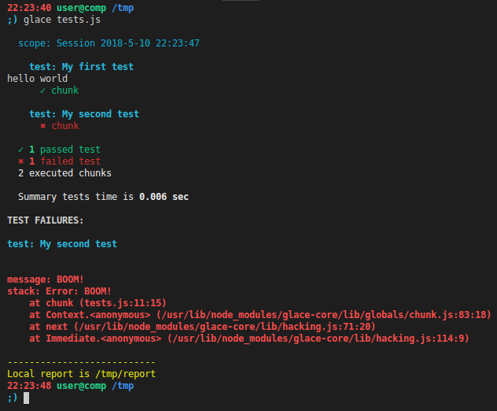

Glace (fr. glacé — ice, frozen) is a cold drink based on coffee with addition of ice cream.
Annotation
glace-core is a quick-start functional & unit testing framework based on mocha and extensible with plugins (how plugins work).
Why it is
- Firstly it's R&D project for me to dive deeply to programming and software architecture.
- Current testing frameworks like mocha or jasmine look cool for unit testing but are not flexible for complex functional scenarios.
Quick start
Make sure you have installed
node >= v8.9&npm >= v5.5.Install
glace-coregloballynpm i -g glace-coreor locallynpm i glace-core.Create file
tests.jswith next content:"use strict"; test("My first test", () => { chunk(() => { console.log("hello world"); }); }); test("My second test", () => { chunk(() => { throw new Error("BOOM!"); }); });About
test,chunkand other key words read here.Launch tests with command
glace tests.jsif you installedglace-coreglobally or with./node_modules/glace-core/bin/glace tests.jsif locally and get the result.
Features
- Cross-platform
- Based on STEPS-architecture and STEPS-protocol
- May be extended with plugins implemented STEPS-protocol
- Oriented to complex functional scenarios
- Indepentently executed chunks inside a test
- Parameterization inside and outside of test
- Mechanism to retry failed tests
- Mechanism to retry failed chunks
- Mechanism to process uncaught exceptions (
mochamechanism is unreliable but supported) - Fixtures support similar to pytest fixtures
- Conftest and preloads support
- Test & chunk options
- Multiple reporting system
- Stdout reporter in-box
- TestRail reporter in-box
- Easy to provide custom reporter
- May read
CLIarguments fromJSONfile - May be extended with custom
JavaScriptconfig - May be used as platform for own testing frameworks development
How to use
glace [options] [sequence-of-test-files-or-folders]CLI options
Common
--version- Show version number.-h, --help- Show help.
Arguments
--config [path], -c- Path to JSON file with CLI arguments. Default iscwd/config.json(if it exists).
Note! All options below may be set via .json file (see option --config above).
Log
--stdout-log- Print log messages to stdout.--log [path]- Path to log file. Default iscwd/glace.log.--log-level [level]- Log level. Supported values areerror,warn,info,verbose,debug,silly. Default isdebug.
Core
--user-config [path]- Path to JS file with configuration which will be merged with override default configuration. Default iscwd/config.js(if it exists).--session-name [name]- Tests run session name. Default value includes wordsessionand datetime.--grep <pattern>, -g- Filter tests by name or name chunk.--include <sequence>- Sequence of test name chunks separated by|in order to choose tests for run.--exclude <sequence>- Sequence of test name chunks separated by|in order to exclude tests from run.--precise- Precise tests inclusion or exclusion (not substring pattern).--report [path]- Path to reports folder. Default iscwd/report.--dont-clear-report- Don't clear previous report on tests run.--dont-check-names- Don't check test names uniqueness (usually useful in unit testing).--failed-tests-path [path]- Path to save failed tests in JSON format. Default iscwd/report/failed-tests.json.--root-conftest <path>- Path to rootconftest.jswhich will be loaded before all.--languages <sequence>- List of tested languages separated with comma.--retry [times]- Number of times to retry failed test. Default is0.--chunk-retry [times]- Number of times to retry failed chunk. Default is0.--chunk-timeout [sec]- Time to execute chunk or hook, sec. Default is180.--uncaught [type]- Strategy to process uncaught exceptions. Default value islog. Supported values arelogjust to log uncaught exceptions,failto fail test if uncaught exception happened,mochato use defaultmochamechanism (unreliable).--kill-procs <sequence>- List of process names separated with comma, which will be killed before tests run.--debug-on-fail- Enter to interactive debug mode on step failure.--exit-on-fail- Finish test run on first failure.--errors-now- Print error message immediately when it happened.--interactive, -i- Launch interactive mode to execute steps manually in terminal.
Plugins
--list-plugins- Show plugins only.--plugins-dir [path]- Path to custom plugins folder. By default it searches plugins inside folder, whereglace-coreis installed.--disable-default-plugins- Disable default plugins.
xUnit
--xunit- Activate xUnit reporter.--xunit-path [path]- Path to xUnit report. Default iscwd/report/xunit.xml.--xunit-suite-name [name]- Tests suite name in xUnit report. By default it's the same as session name.
Allure
--allure- Activate Allure reporter.--allure-dir [path]- Path to allure reports folder. Default iscwd/report/allure.
TestRail
--testrail- Activate TestRail reporter.--testrail-host <host>- TestRail host.--testrail-user <user>- TestRail username or email.--testrail-token <token>- TestRail token.--testrail-project-id <id>- TestRail project id.--testrail-suite-id <id>- TestRail suite id.--testrail-run-name <name>- TestRail run name.--testrail-run-desc <description>- TestRail run description.
Tools
--testrail-check- Check TestRail cases consistency with implemented tests.--list-steps [filter]- List available steps and exit.--list-tests [filter]- List collected tests and exit.--list-fixtures [filter]- List available fixtures and exit.
Test examples
See integration tests in order to explore examples.
Frameworks platform
GlaceJS may be used as platform for own testing frameworks development. Simple example:
require("colors");
require("glace-core").run().then(errCode => {
if (!errCode) {
console.log("It's passed! 🙂".green.bold);
} else {
console.log("It's failed! 🙁".red.bold);
};
process.exit(errCode);
});Tests and quality
Guidelines
How to retry tests or chunks
In order to retry failed tests or chunks you may pass CLI options --retry or
--chunk-retry to affect all tests or chunks or to specify retry option
for concrete test or chunk.
How to use fixtures
In order to avoid copy/paste with before and after hooks in tests you may use fixtures...